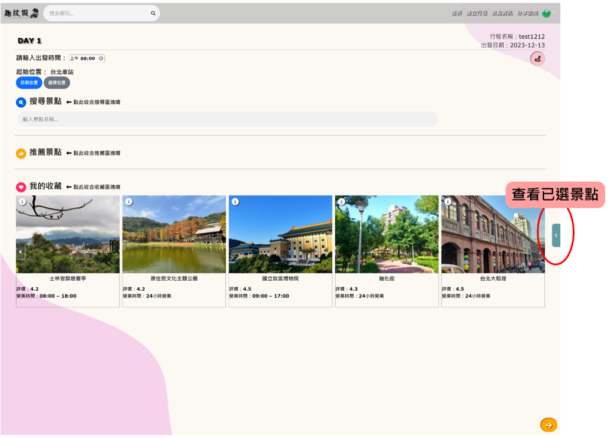

<div class="tutorialCarouselOuter">
    <div class="tutorialCarouselInner">
        <div id="carouselExampleIndicators" class="carousel slide" style="height: 100%;border-radius: 20px;">
            <div class="carousel-indicators">
                <button type="button" style="background-color: black;" data-bs-target="#carouselExampleIndicators"
                    data-bs-slide-to="0" class="active" aria-current="true" aria-label="Slide 1"></button>
                <button type="button" style="background-color: black;" data-bs-target="#carouselExampleIndicators"
                    data-bs-slide-to="1" aria-label="Slide 2"></button>
                <button type="button" style="background-color: black;" data-bs-target="#carouselExampleIndicators"
                    data-bs-slide-to="2" aria-label="Slide 3"></button>
                <button type="button" style="background-color: black;" data-bs-target="#carouselExampleIndicators"
                    data-bs-slide-to="3" aria-label="Slide 4"></button>
                <button type="button" style="background-color: black;" data-bs-target="#carouselExampleIndicators"
                    data-bs-slide-to="4" aria-label="Slide 5"></button>
                <button type="button" style="background-color: black;" data-bs-target="#carouselExampleIndicators"
                    data-bs-slide-to="5" aria-label="Slide 6"></button>
                <button type="button" style="background-color: black;" data-bs-target="#carouselExampleIndicators"
                    data-bs-slide-to="6" aria-label="Slide 7"></button>
            </div>
            <div class="carousel-inner">
                <div class="carousel-item active">
                    
                    <!-- <div style="position: absolute;top: 10%;left: 0;border: 3px solid red;width: 380px;height: 150px;border-radius: 50px;display: flex;justify-content: center;">
                        <div style="position: absolute;bottom: -20px;width: 50%;text-align: center;background-color: rgb(255, 160, 160);padding: 5px 10px;border-radius: 20px;">先設定出發位置</div>
                    </div> -->
                </div>
                <div class="carousel-item">
                    
                </div>
                <div class="carousel-item">
                    
                </div>
                <div class="carousel-item">
                    
                </div>
                <div class="carousel-item">
                    
                </div>
                <div class="carousel-item">
                    
                </div>
                <div class="carousel-item">
                    
                </div>
            </div>
            <button class="carousel-control-prev" type="button" data-bs-target="#carouselExampleIndicators" data-bs-slide="prev" 
                style="background-color: rgba(0, 0, 0, 0.53);width: 5%;height: 50px;position: absolute;top: 50%;bottom: 50%;box-shadow: 2px 2px 2px #ccc;">
                <span class="carousel-control-prev-icon" aria-hidden="true"></span>
                <span class="visually-hidden">Previous</span>
            </button>
            <button class="carousel-control-next" type="button" data-bs-target="#carouselExampleIndicators" data-bs-slide="next" 
                style="background-color: rgba(0, 0, 0, 0.53);width: 5%;height: 50px;position: absolute;top: 50%;bottom: 50%;box-shadow: 2px 2px 2px #ccc;">
                <span class="carousel-control-next-icon" aria-hidden="true" ></span>
                <span class="visually-hidden">Next</span>
            </button>
        </div>
    </div>
    <div class="close_Tutorial">
        <i class="fa-solid fa-xmark" onclick="closeTutorial()"></i>
    </div>
</div>

<script src="/static/js/owlTutorialStart.js"></script>
<script>
    owlTutorialStart();
</script>